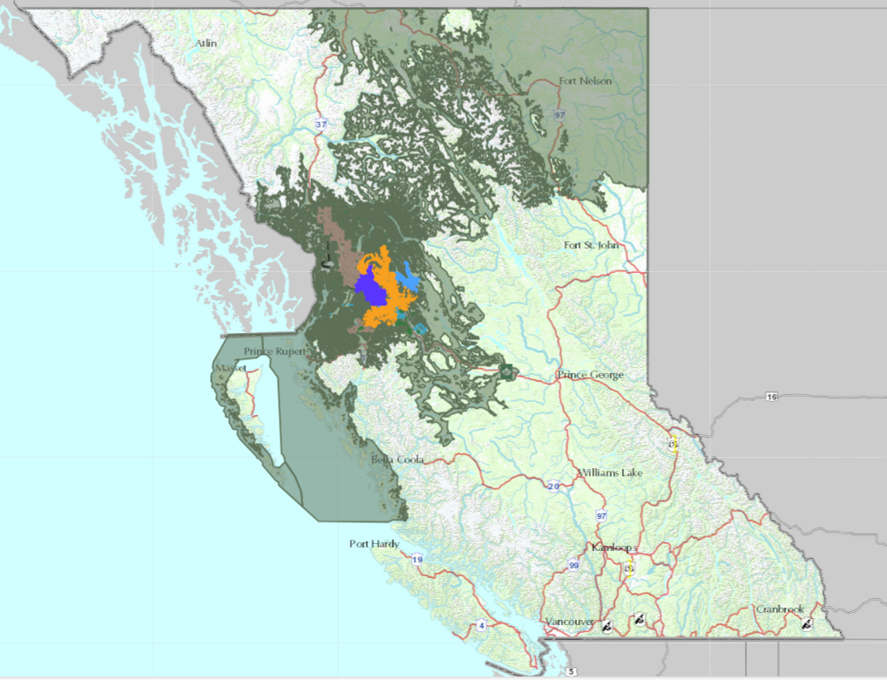
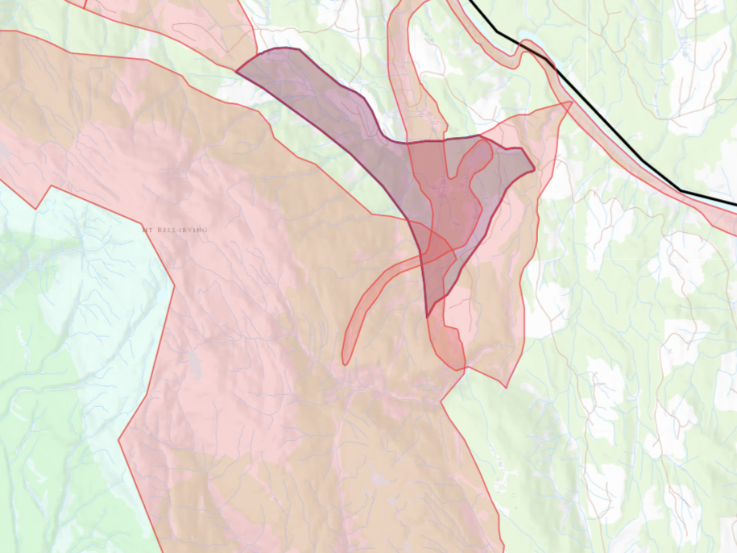

Discover The Land Use Plan

Gitanyow Land Use Plan Overview
View the Land Use Plan Overview Map

Intersect with Legal and Non Legal Planning Objectives
Upload a KML, GeoJSON, GPX or shapefile and intersect it with current planning objectives
Try it out!